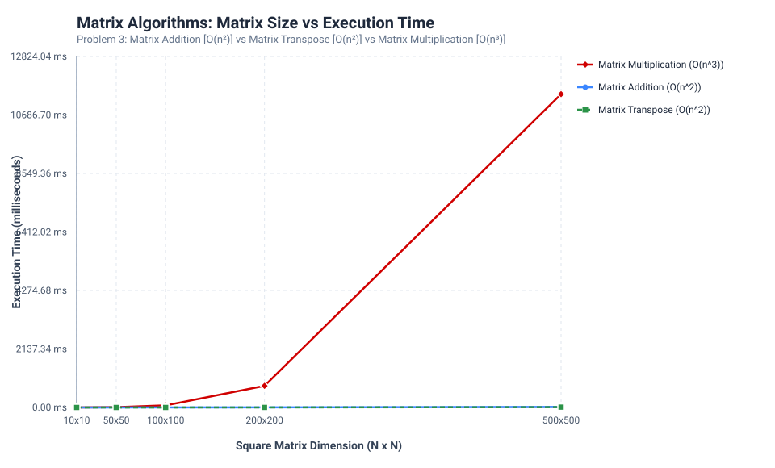

Experimental and Theoretical Analysis of Matrix Addition, Transpose, and Multiplication (SVNIT M.Tech CSDS103)

| Operation | Matrix Size | Complexity | Time (µs) | Time (ms) |
|---|---|---|---|---|
| Matrix Addition | 10x10 | O(n^2) | 15.62 µs |
0.0156 ms |
| Matrix Transpose | 10x10 | O(n^2) | 7.53 µs |
0.0075 ms |
| Matrix Multiplication | 10x10 | O(n^3) | 116.96 µs |
0.1170 ms |
| Matrix Addition | 50x50 | O(n^2) | 196.35 µs |
0.1963 ms |
| Matrix Transpose | 50x50 | O(n^2) | 107.70 µs |
0.1077 ms |
| Matrix Multiplication | 50x50 | O(n^3) | 9940.84 µs |
9.9408 ms |
| Matrix Addition | 100x100 | O(n^2) | 752.55 µs |
0.7525 ms |
| Matrix Transpose | 100x100 | O(n^2) | 421.64 µs |
0.4216 ms |
| Matrix Multiplication | 100x100 | O(n^3) | 76734.80 µs |
76.7348 ms |
| Matrix Addition | 200x200 | O(n^2) | 2917.44 µs |
2.9174 ms |
| Matrix Transpose | 200x200 | O(n^2) | 1568.24 µs |
1.5682 ms |
| Matrix Multiplication | 200x200 | O(n^3) | 790697.13 µs |
790.6971 ms |
| Matrix Addition | 500x500 | O(n^2) | 20004.17 µs |
20.0042 ms |
| Matrix Transpose | 500x500 | O(n^2) | 11939.32 µs |
11.9393 ms |
| Matrix Multiplication | 500x500 | O(n^3) | 11450039.49 µs |
11450.0395 ms |